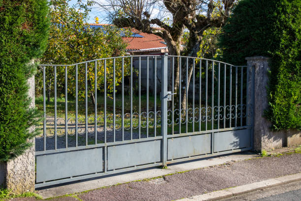
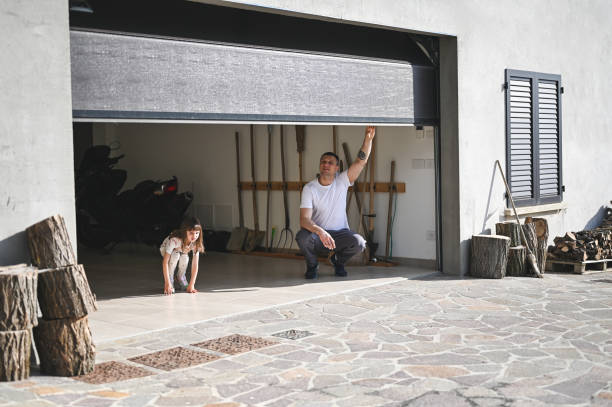
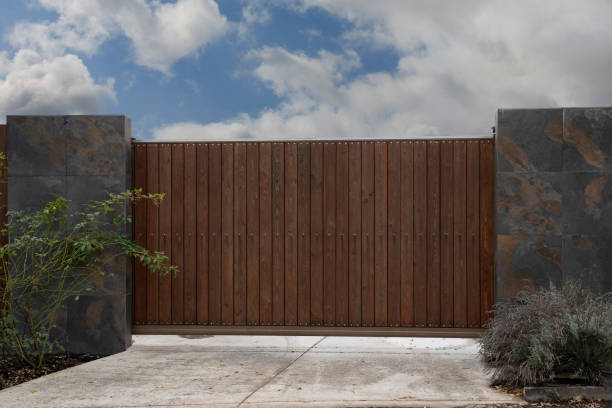
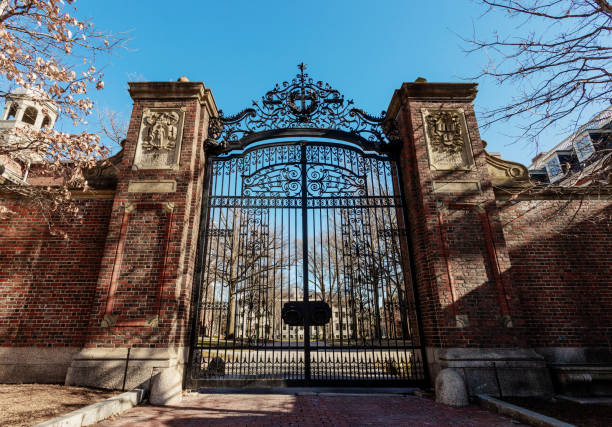

USA - Nationwide
info@securedrivewaygates.pro
USA - Nationwide
info@securedrivewaygates.pro

Enhance your property's curb appeal and security with our expert driveway gate installation services .
Experience the ultimate convenience and security with Secure Driveway Gates' automatic driveway gates. Serving Usa - Nationwide, our gates are crafted to seamlessly integrate with your property’s aesthetic while providing top-notch security features. Our automatic gates offer smooth, reliable operation and can be customized to match your design preferences and functional requirements. From consultation to installation and ongoing maintenance, our dedicated team ensures you receive exceptional service. Elevate your property with our state-of-the-art automatic gates and enjoy the ease of modern gate technology. Contact us to get started and discover the difference our automatic driveway gates can make!
Residential & commercial Driveway Gates
Quality services at affordable prices
Immediate 24/ 7 emergency services


Electric gates are a modern convenience that enhances security while adding functionality to your property. However, like any mechanical system, they can encounter issues. Our electric gate repair services in Usa - Nationwide are designed to quickly diagnose and resolve any problems you may face, from malfunctioning openers to wiring issues. With years of experience under our belt, our technicians can handle all brands and models, ensuring your electric gate operates smoothly. Our commitment to affordable rates and high-quality service has earned us a reputation as the go-to company for electric gate repair . Choose us, and you won't be disappointed!

Imagine driving up to your home or business and having your gate open automatically. That’s the luxury and convenience of automatic driveway gates. Our automatic driveway gates in Usa - Nationwide are designed with technology and safety in mind. We offer various options, from simple remote access to advanced gate automation systems that integrate with your home technology. Our team not only installs high-quality automatic gates but also provides support and maintenance to keep them operating flawlessly. With our professionalism and expertise, you can trust us as the top choice for automatic driveway gate solutions .

At Driveway Gates, we understand that every home is unique and deserves a driveway gate that reflects its individuality. That’s why we offer custom driveway gates tailored to your specifications. Our design team works closely with you to create a gate that not only enhances your property’s aesthetics but also fulfills your security needs.
Whether you prefer a traditional wooden gate or a sleek modern metal design, we have the skills and resources to bring your vision to life. Custom gates are an investment in your property’s long-term security and appeal, and our experts have the experience to ensure your gate is designed and installed perfectly. We take pride in our craftsmanship and attention to detail, making us the preferred choice for homeowners looking for personalized service and exceptional results.

Your home is a reflection of your personality, and a custom driveway gate can enhance that expression. We specialize in custom driveway gate installations that cater to your individual style and preferences. Whether you're looking for a modern aesthetic or a classic, elegant design, our craftsmen work closely with you to create a bespoke solution that complements your property in Usa - Nationwide. We use high-quality materials, ensuring that your custom gate is not only stunning but also durable. Our expert team manages every detail from design through installation, guaranteeing a seamless addition to your home’s exterior. Choose our custom driveway gate services and turn your vision into reality.

Sliding driveway gates are an excellent solution for properties with limited space. Our sliding driveway gate installation services in Usa - Nationwide provide a perfect blend of functionality and style. These gates glide open smoothly without requiring additional space to swing, making them ideal for narrow driveways or properties close to sidewalks. Our experienced technicians ensure precise installation, taking into account your property’s unique layout and landscape. We offer a variety of materials and designs, ensuring that your sliding gate not only meets your practical needs but also enhances your property’s curb appeal. Choose us for reliable sliding driveway gate installation and enjoy the ease of use and security it provides.

If your driveway gate is electric but not operating as it should, it may be a motor issue. Our driveway gate motor repair services in Usa - Nationwide focus on diagnosing and fixing motor-related problems efficiently. Our technicians are equipped with the knowledge and tools to address common motor failures such as overheating, power failures, and worn-out components. We believe in prompt service; therefore, we strive to minimize your wait time, getting your gate back up and running as quickly as possible. Trust our experts for quality driveway gate motor repairs and regain the convenience of an automatic entryway.

When your driveway gate needs repairs, affordability is key without compromising quality. Our affordable driveway gate repair services ensure that you receive high-quality repairs at prices that won’t break the bank. We understand the importance of securing your property, and we strive to deliver value for your money. Our skilled technicians provide thorough inspections followed by detailed repair plans that fit your budget. No job is too small or too big for us, and we pride ourselves on transparency and honesty in our pricing. Choose us for your driveway gate repairs and experience reliable service without the hefty price tag.

Finding affordable driveway gate repair services that don’t compromise on quality can be a challenge. At Driveway Gates, we offer competitive rates for driveway gate repair services in Usa - Nationwide without sacrificing the quality of work. We believe that everyone deserves to feel secure without breaking the bank. Our trained technicians have the skills and tools needed to diagnose and repair any issues with your driveway gate promptly. From minor repairs to complex issues, we handle it all with professionalism and expertise. When you choose us, you can rest assured that you’re receiving excellent service at an affordable price, ensuring your driveway gate remains functional and secure for years to come.

Wooden driveway gates offer a classic, warm aesthetic that complements many styles of homes. Our wooden driveway gate installation services in Usa - Nationwide are designed for durability and beauty. We use high-quality hardwoods and expert craftsmanship to ensure each gate is not only attractive but also long-lasting. The natural beauty of wood adds elegance to your property while providing a sturdy barrier that enhances security. We offer custom designs to match your style and specifications. Choose us for professional wooden driveway gate installations and elevate your property’s charm and security.

When considering a driveway gate installation, you want the best in the business. Our team of professionals has years of experience as the best driveway gate installers in Usa - Nationwide. We pride ourselves on delivering exceptional service, from the initial consultation to the final installation. Our expertise spans various gate designs and technologies, allowing us to recommend and install a gate that perfectly matches your needs. Customer satisfaction is at the forefront of our operations, and we strive to exceed your expectations at every step. If you want a reliable partner for your driveway gate installation, look no further!

Wooden driveway gates add a touch of elegance and charm to any property. Our wooden driveway gate installation services cater to homeowners who appreciate the beauty of natural materials. We offer a range of designs and wood types, ensuring you can achieve the perfect look for your home. Our skilled craftsmen utilize high-quality materials and construction techniques to ensure durability and longevity. We also provide maintenance and repair services to keep your wooden gate in great shape. Choose us for your wooden driveway gate installation, and bring your vision into reality with our expertise and quality service.

If you are looking for strength combined with style, our iron driveway gate installation services in Usa - Nationwide offer the perfect solution. Iron gates are not only robust but also add a sense of grandeur to your property. Our team specializes in custom iron gates, providing a variety of designs that can fit any entrance. We utilize high-quality materials to ensure your gate withstands the test of time while providing maximum security. Over the years, we have built a reputation for excellence, making us the preferred choice for iron driveway gate installation. Let us help you secure your property with style and durability.

Finding reliable local gate repair services can be challenging. At Driveway Gates, we take pride in being part of the Usa - Nationwide community and offering exceptional gate repair services that address a variety of needs. Our local presence allows us to be quick to respond to service requests, providing you with peace of mind knowing that help is just around the corner.
We specialize in diagnosing and repairing different types of driveway gates, whether they are electric, automatic, or manual. Our skilled technicians utilize their local knowledge and expertise to offer tailored solutions that meet your specific needs. With a focus on customer service, we ensure you receive timely, professional assistance, making us the trusted choice for all local gate repair needs.

Proper maintenance of your driveway gate is essential for ensuring its longevity and efficient operation. At Driveway Gates, we offer comprehensive driveway gate maintenance services designed to keep your gate operating smoothly for years. Regular maintenance can prevent costly repairs and extend the lifespan of your gate.
Our maintenance services include routine inspections, lubrication, and adjustments to ensure your gate opens and closes without issues. We also check all electronic components and mechanisms to ensure they are functioning correctly. Our focus on preventative maintenance means that you can enjoy uninterrupted service and peace of mind, knowing your driveway gate is in top condition. Trust us to keep your gate maintained and functioning like new.

Security driveway gates are a critical component in protecting your property against unauthorized access. At Driveway Gates, we specialize in high-quality security driveway gates designed to provide ultimate protection for your home or business. Our gates come with the latest features, including robust locking systems and various automation options, ensuring enhanced security without compromising style. We work with you to understand your specific security needs, offering customized solutions that fit your requirements perfectly. Our professional installation ensures that your security gate operates reliably and effectively, and we provide ongoing support for long-term maintenance. Choose us for security driveway gates that safeguard your property and provide you with peace of mind.

When your automatic gate malfunctions, it’s crucial to have someone who can quickly address the issue. Our automatic gate repair services near you are designed for convenience and reliability. With a team of trained professionals who understand the intricacies of various automatic gate systems, we deliver prompt and effective repair solutions.
We pride ourselves on our quick response times and comprehensive service offerings, which range from minor adjustments to major repairs. Using advanced diagnostic tools, we identify issues efficiently and provide transparent quotes that make the repair process seamless. With our commitment to customer satisfaction, you can trust us to resolve your automatic gate issues swiftly, allowing you to regain the convenience and security of your system.

Embrace modern technology with our electric driveway gate installation services . Electric gates provide seamless access with a touch of a button, making them a popular choice among homeowners and businesses. We offer a selection of electric gate styles and operation systems tailored to your preferences. Our team takes pride in delivering professional installation while ensuring safety and functionality are prioritized. Choose us for electric driveway gate installation, and experience the convenience and security that electric gates bring.

When your driveway gate shows signs of wear and tear or has suffered damage, it may be time for a replacement. Our driveway gate replacement services in Usa - Nationwide are here to help you transition smoothly with minimal disruption. We understand how important a functioning gate is for your security and ease of access which is why we offer comprehensive replacement options tailored to your specifications.
Our selection includes a variety of styles and materials, ensuring you find the perfect gate to match your home’s aesthetic. With trained technicians managing the replacement process, we guarantee a seamless transition and professional installation, leaving you with a secure and stylish new gate. Choosing us means opting for quality, durability, and exceptional customer service every step of the way.

For those seeking strength and a modern aesthetic, our steel driveway gate installation services are the perfect choice. Steel gates offer unparalleled durability and security, making them a popular option for residential and commercial properties alike. We provide a variety of designs that range from minimalist to ornate, ensuring that your new gate aligns with your style. Our highly skilled installers ensure each gate is fitted correctly and operates flawlessly, providing you with peace of mind and a stunning entrance. Choose us for your steel driveway gate installation and enjoy long-lasting quality and beauty.

Looking for a robust solution to fortify your property? Our steel driveway gate installation services in Usa - Nationwide offer exceptional strength and durability. Steel gates are perfect for creating a secure perimeter around your home or business while maintaining an elegant look. We custom fabricate steel gates to meet your specifications and aesthetic preferences, ensuring they fit perfectly with your property. Our team of professionals is dedicated to delivering quality installations and stand behind our work with excellent customer service. Choose steel for your driveway gate and enjoy both security and style.

Enhance the functionality of your driveway gates with our gate automation services in Usa - Nationwide. Automating your gates not only adds convenience but also maximizes security. We offer a wide array of gate automation options compatible with various gate styles and types, from single family homes to commercial properties. Our experienced experts will ensure that your gate operates smoothly and securely, employing the latest technology. Choose us for the best in gate automation services; we pride ourselves on our professionalism and customer satisfaction.

When looking for a reliable driveway gate company near you, trust us to deliver. Our team is well-known in Usa - Nationwide for providing top-quality gate installation, repair, and maintenance services. We understand that finding a local provider is essential for timely service, especially during emergencies. Our dedication to our community ensures that we are always available to assist you with professional expertise and a friendly approach. As your local driveway gate company, we are committed to deliver high quality, affordable solutions tailored to your needs.
alooma23id

Automatic sliding gates provide convenience and security but can sometimes encounter issues due to wear and tear or mechanical failure. At Driveway Gates, we offer specialized automatic sliding gate repair services . Our experienced technicians are well-versed in troubleshooting and repairing various sliding gate systems, ensuring that any problems are resolved efficiently and effectively. We prioritize quick response times, knowing the importance of getting your gate back in working order as soon as possible. By using high-quality replacement parts and providing transparent pricing, we ensure customer satisfaction and reliable service. Trust us to restore your automatic sliding gate's functionality and security!

If your driveway gate isn’t opening or closing properly, the issue might lie with the gate operator. Our driveway gate operator repair services ensure that your gate operates with maximum efficiency. We offer comprehensive repairs for all types of gate operators, identifying issues swiftly and providing effective solutions. Our team is dedicated to transparency and communication, providing quotes up front and keeping you informed throughout the repair process. Trust us to restore your gate operator to its optimal performance; your satisfaction is our priority.
USA - Nationwide Driveway Gates Pros
(877) 848-1711
info@securedrivewaygates.pro
09.00 AM - 09.00 PM
09.00 AM - 12.00 PM